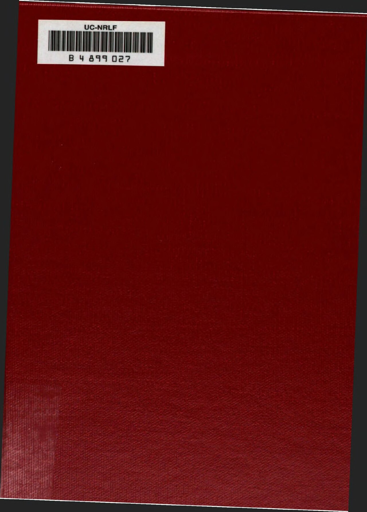
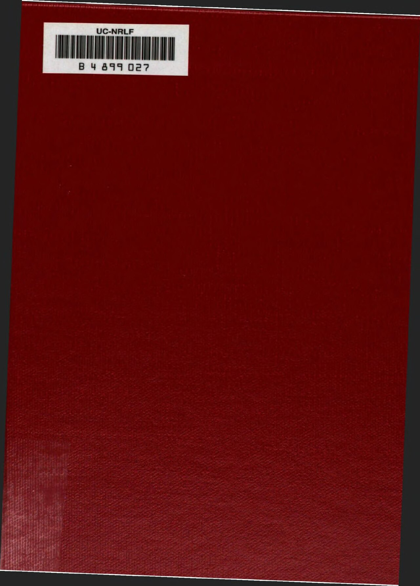
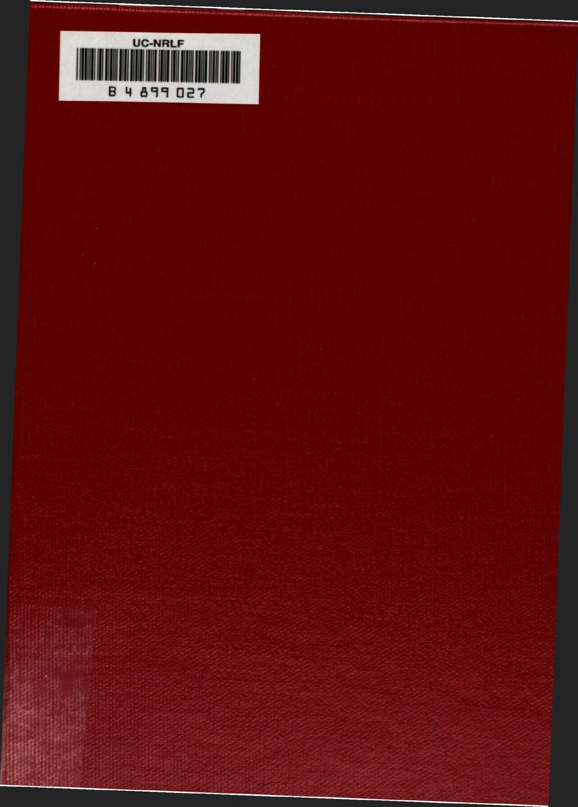

CityLoop Quest Gand


Jacob van Artevelde domine la Vrijdagmarkt d’un geste théâtral, le bras tendu vers l’Angleterre. Ce marchand et homme politique du XIVe siècle réussit à préserver l’approvisionnement en laine anglaise pendant la guerre de Cent Ans, donnant à Gand une influence exceptionnelle. Son alliance avec Édouard III lui valut le surnom de « sage homme de Gand », mais aussi de puissants ennemis. Il fut assassiné en 1345 par des adversaires gantois. Sa statue monumentale, inaugurée en 1863, transforma un acteur médiéval complexe en héros de l’autonomie flamande.

Charles Quint offre un contraste saisissant. Né au Prinsenhof en 1500, il devint souverain d’un empire immense, mais il réprima sévèrement sa ville natale après la révolte de 1539. En 1540, des notables durent défiler en chemise, certains portant une corde au cou. Cet épisode explique le surnom de « Stroppendragers », les porteurs de corde, aujourd’hui revendiqué avec humour et fierté par les Gantois. Le palais de sa naissance a presque disparu, mais sa mémoire traverse le quartier.

Les frères Hubert et Jan van Eyck ont inscrit Gand dans l’histoire mondiale de l’art. L’Agneau mystique, achevé en 1432, associe une technique de peinture à l’huile d’une finesse extraordinaire à une conception théologique monumentale. Hubert demeure mystérieux ; Jan, peintre de cour du duc de Bourgogne, maîtrisait les effets de lumière, les textures et les inscriptions avec une précision stupéfiante. Le retable a connu vols, déplacements et restaurations, mais conserve sa capacité à surprendre.

Au XIXe siècle, Lieven Bauwens incarne l’industrialisation. Il fit venir clandestinement d’Angleterre des machines et des ouvriers qualifiés, contribuant au développement des filatures mécaniques. Son image oscille entre entrepreneur audacieux et homme d’affaires profitant d’un système social très dur. À la même époque, le scientifique Joseph Guislain transforma la manière de penser le soin psychiatrique ; l’hospice qui porte son nom associait architecture, hygiène et traitement moral.
Le XXe siècle gantois compte des figures très différentes : le peintre et graveur Frans Masereel, dont les romans sans paroles dénoncent violence et inégalités ; le collectionneur et conservateur Jan Hoet, qui fit de Gand une capitale de l’art contemporain ; et l’écrivain Maurice Maeterlinck, prix Nobel de littérature en 1911, né dans une famille bourgeoise de la ville. Ces trajectoires montrent qu’un personnage marquant n’est pas nécessairement un souverain : artistes, médecins, industriels et médiateurs culturels ont autant façonné l’identité locale.
L’histoire industrielle porte aussi le nom de Lieven Bauwens. À la fin du XVIIIe siècle, cet entrepreneur gantois fit sortir clandestinement d’Angleterre des machines et des ouvriers capables de transmettre les techniques modernes de filature. Son aventure, digne d’un roman d’espionnage économique, accéléra la mécanisation du coton sur le continent. Elle eut une face brillante, celle de l’innovation, et une face beaucoup plus dure : journées interminables, travail des enfants, logements insalubres et dépendance envers une industrie vulnérable aux crises.
Les XIXe et XXe siècles offrent d’autres voix. Edward Anseele organisa coopératives et mouvement ouvrier autour du Vooruit, démontrant que la boulangerie, la culture et la politique pouvaient partager le même projet d’émancipation. Maurice Maeterlinck, né à Gand en 1862, reçut le prix Nobel de littérature en 1911 pour un théâtre symboliste peuplé de silences et de présences invisibles. Plus près de nous, des artistes comme Walter De Buck ont réactivé la fête populaire et la mémoire des quartiers. Ces personnages n’entrent pas dans une galerie uniforme : certains ont négocié avec le pouvoir, d’autres l’ont défié, inventé une forme artistique ou transformé le quotidien. Leurs traces sont parfois monumentales, parfois minuscules : une statue sur une place, un nom de rue, une maison natale ou une chanson reprise pendant les fêtes. Cette diversité explique pourquoi l’histoire gantoise se raconte mieux comme un débat animé que comme un paisible album de célébrités.